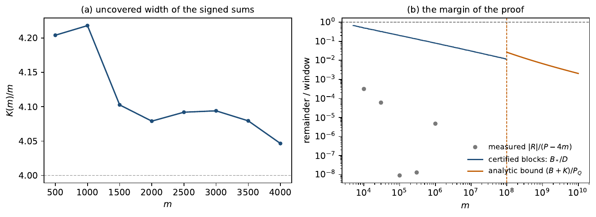
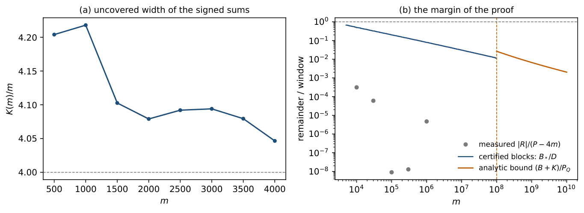
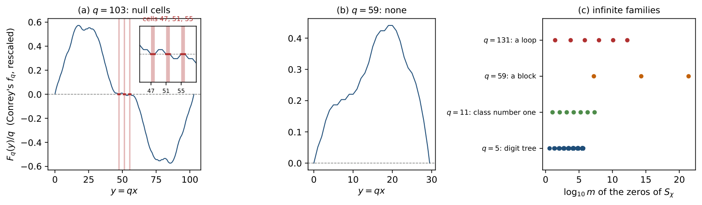
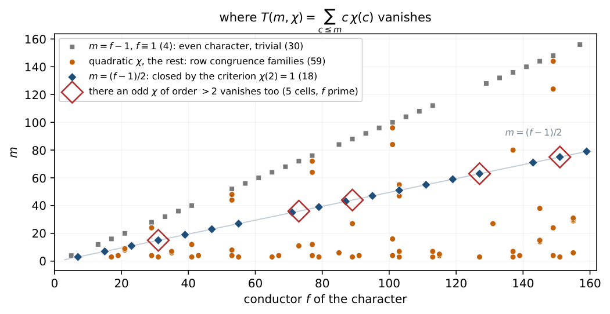
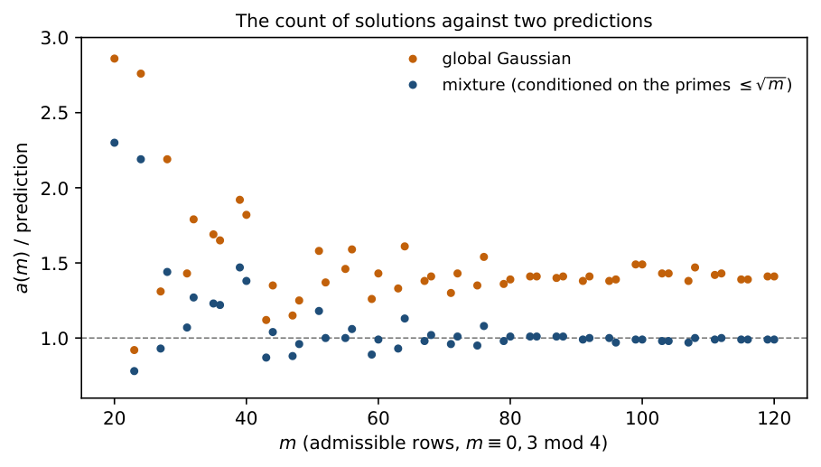
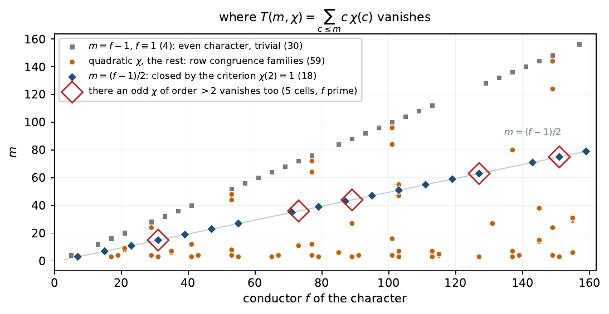

Zeros of weighted partial sums of completely multiplicative functions: Dirichlet characters, the Euler factor at 2 and Conrey’s sine series
At a glance
What the paper contributes
For a completely multiplicative ε : ℕ → {±1}, the weighted sum Sε(m) = Σn≤m n ε(n) can vanish only when m ≡ 0, 3 (mod 4).
- Every admissible length is a zero (Theorem 1): for every such m ≥ 3 some ε has Sε(m) = 0 — a second moment, 104 integer certificates up to 108, and Sárközy’s progressions in subset sums beyond.
- One fixed function rarely vanishes, but generically does (Theorem 5): the ε with infinitely many zeros form a dense Gδ of probability zero, since every finite prefix of signs extends to a zero (Proposition 4).
- Quadratic characters are explicit points of that set: a digit recursion in base q (Theorem 6) propagates their zeros for q ≡ 1 (mod 4), for q ≡ 7 (mod 8) through the Euler factor at 2 of the weighted half sum (Theorem 7, classical in form), for class number one and along loops of the recursion (Corollary 8, Proposition 9); for odd characters of any order at (qj − 1)/2 exactly when χ(2) = 1 (Corollary 10).
- The digits are Conrey’s null cells: they are the cells on which Conrey’s sine series vanishes identically; positivity of a related series would exclude them for q ≡ 3 (mod 8) (Proposition 11).
- The origin: on the diagonal of the moment matrix of the ring of character values, the vanishing components are the odd characters trivial on ⟨2⟩, and the rank defect is d/t for every odd conductor (Theorem 14, known in substance: Jager–Lenstra, Girstmair).
- Added after publication: for q = 179 and 227, χq,1 has no zero at all (N1), by a finite certificate checked in Lean.
🚀 Start here: Theorem 1: every admissible length is a zero of some ε.
Main results:
- Theorem 1: every admissible length is a zero of some ε
- Theorem 5: infinitely many zeros: a dense G_δ of probability zero
- Corollary 8: zeros read off the base-q digits: five families
- Corollary 10: S_χ((q−1)/2) = 0 iff χ(2) = 1, for every order
- Theorem 14: the rank defect on the diagonal is d/t, for every odd conductor
🗺️ Map of the results (click a box to go to it)
Dependencies in the written proof: an arrow A → B means that this proof of B uses A. Every result rests on its written proof; the tags record what was checked besides, and each statement's “Evidence & scope” block says how far. The colour of a box is its strongest tag, in the order above; the tags in the box give the rest. Boxes with a thick border are the main results; click a box to read the statement.
📐 Setting (copied from the paper)
For a completely multiplicative \(\varepsilon :\mathbb N\to \{ \pm 1\} \), determined by its values at the primes, \(S_\varepsilon (m)=\sum _{n\le m}n\, \varepsilon (n)\). Changing one sign changes \(S_\varepsilon (m)\) by an even amount, so \(S_\varepsilon (m)\equiv m(m+1)/2\pmod2\), and a zero is possible only when \(m\equiv 0\) or \(3\pmod4\); call these lengths admissible. A prime \(q\in (m/2,m]\) divides no \(n\le m\) other than \(q\) itself, so its sign enters \(S_\varepsilon (m)\) once, with weight \(q\). For a set \(Q\) of such primes, \(S_\varepsilon (m)=R_Q+\sum _{q\in Q}q\, \varepsilon (q)\), where \(R_Q\) depends only on the signs outside \(Q\); \(P_Q=\sum _{q\in Q}q\). For an odd prime \(q\) and \(s=\pm 1\), \(\chi =\chi _{q,s}\) is the completely multiplicative function equal to the Legendre symbol \((\cdot \mid q)\) on the integers prime to \(q\), with \(\chi (q)=s\); \(C(r)=\sum _{r'\le r}\chi (r')\), \(T(r)=\sum _{r'\le r}r'\chi (r')\) \((0\le r{\lt}q)\), \(T_q=T(q-1)\), and \(R_q=\{ 0\le r{\lt}q:\ T_q+q\, C(r)=0=T(r)\} \).
1 Half sums since 1832, and a question of signs
No numbered statement in this section.
Its figures and tables are below; its text is in the paper (PDF).
🖼️ Figure 1

Three lanes, and this note at the crossing. Half sums: from Jacobi’s class number formula to the determinants of Maillet, Carlitz–Olson and Kučera; the question is when they vanish, and the answer is the prime \(2\). Signs: the sizes and signs of sums of completely multiplicative \(\pm 1\) functions, from Pólya’s observation to Tao’s proof of Erdős’s discrepancy problem and Conrey’s route to the Riemann hypothesis through Legendre symbols. Subset sums: arithmetic progressions among subset sums, the tool that turns a size estimate into an exact zero.
|
question |
answer |
|
How does a zero appear at every admissible length? (§2) |
the primes of \((m/2,m]\) enter once: a second moment fixes the rest, and their signed sums cover the remainder — by certificates up to \(10^8\), by Sárközy’s progressions beyond. Theorem 1, Table 1, Figure 2 |
|
How often does one function vanish? (§3) |
infinitely often on a dense \(G_\delta \), but with probability zero: the weight makes the sum jump over \(0\). Proposition 4, Theorem 5 |
|
Which functions do? (§3) |
quadratic characters, through a digit recursion: for \(q\equiv 1\pmod4\), for \(q\equiv 7\pmod8\) by the Euler factor at \(2\) again, for class number one, wherever the recursion closes a loop, and for \(\chi (q)=-1\) as soon as there is one zero; for odd characters of any order, at \((q^j-1)/2\), exactly when \(\chi (2)=1\). The null cells of Conrey’s sine series are the same digits. Theorem 6, Corollaries 8 and 10, Propositions 9 and 11, Table 2, Figure 3 |
|
Where does the question come from? (§4) |
from the moment matrix of the ring of character values in [ 29 ] , whose components are weighted half sums of characters. The rest of this table is about them. |
|
Which components of the moment matrix vanish on the diagonal? (§4.2) |
those at the odd characters with \(\chi (2)=1\), by an Euler factor at \(2\): \(d/t\) of them for a prime conductor, and \(d/t\) is the rank defect for every odd conductor. Theorem 7, Corollary 13, Theorem 14 |
|
Which rows off the diagonal can be occupied? (§4.3) |
exactly those with \(\bigl(\frac2n\bigr)=1\), that is \(m\equiv 0,3\pmod4\): parity on one side, Theorem 1 on the other. Proposition 16, Corollary 17 |
2 Every admissible length
For every \(m\ge 3\) with \(m\equiv 0\) or \(3\pmod4\) there is a completely multiplicative \(\varepsilon :\mathbb N\to \{ \pm 1\} \) with
🆕 Classical and new: the paper places it outside the questions of size and sign asked before (§1): an exact zero of a weighted sum at every admissible length; the tool is Sárközy’s progressions in subset sums [BW21, Thm 4.23].
↳ Used in: Proposition 4, Corollary 17
Table 1 summarises the three ranges.
Up to \(20000\). For each admissible \(m\le 20000\) a function \(\varepsilon \) with \(S_\varepsilon (m)=0\) is exhibited and the sum is recomputed exactly: for all but four lengths by starting from \(\varepsilon (2)=\varepsilon (3)=-1\) (with at most two signs at primes \(\le 7\) changed), balancing the primes of \((\sqrt m,m/2]\) and solving (1) exactly with the primes of \((m/2,m]\); the lengths \(12,15,19,23\) by exhaustive search.
From \(5000\) to \(10^8\). Cut \([5000,10^8)\) into \(104\) blocks \([a_j,b_j]\),
and let \(Q\) be the primes of \((b_j/2,a_j]\), which lie in \((m/2,m]\) for every \(m\) in the block; the other primes of \((m/2,m]\) are among the random signs of Lemma 2. Each block carries a certificate: a prime \(q_0\in Q\) and disjoint pairs in \(Q\) as in Lemma 3(b), with \(2H-q_0+2\ge b\). Every other prime of \(Q\) is at most \(a\le b\), so Lemma 3(a) extends the interval to \([\alpha ,P_Q-\alpha ]\) with \(\alpha =U+q_0-1\). The block is proved for all its \(m\) once \(D=P_Q-2\alpha \) exceeds \(B_*(b)\ge B_*(m)\), which is the integer inequality \(90D^2{\gt}b^3(130+7e)\) with \(e=\lceil \log _2b\rceil \) (as \(\log b{\lt}7e/10\)). All \(104\) certificates pass; the bound \(b^3(130+7e)/(90D^2)\) on \(B_*(b)^2/D^2\) is at most \(0.445\), reached at the first block.
From \(10^8\) on. Let \(M\ge 10^8\), \(L=\log M\), \(Q\) the \(N\) primes of \((M/2,M]\). By Dusart’s bounds \(x/(\log x-1)\le \pi (x)\) for \(x\ge 5393\) and \(\pi (x)\le x/(\log x-1.1)\) for \(x\ge 60184\) [ 5 , Thm. 6.9, (6.6) ] , \(N\ge M/(2L)\) and \(P_Q\ge NM/2\ge M^2/(4L)\). Let \(X\subset Q\) have \(n=\lfloor N/8\rfloor \ge M/(17L)\) elements and take \(\ell =4M\): the hypothesis of Lemma 3(c) follows from \(n^2\ge 48M\log (4M/n)\), which holds once \(M\ge 13872L^2\log (68L)\), that is from \(M\approx 2.9\cdot 10^7\) (from \(4.4\cdot 10^7\) if the logarithm of Lemma 3(c) is read to base \(2\)). This gives a progression of step \(s\le 4M/n\) whose terms are at most \(24M^2/n\). Add \(s-1\) further primes of \(Q\): they are units modulo \(s\), so their subset sums meet every class, and the progression becomes an interval \([\alpha ,\alpha +w]\) with \(\alpha \le 28M^2/n\) and \(w\ge (\ell -1)s-(s-1)M\ge M\). The remaining primes, each at most \(M\), extend it by Lemma 3(a); they are \(N-n-s+1\ge \tfrac 78N-s\) primes above \(M/2\), while \(X\) and the \(s-1\) added primes weigh at most \((\tfrac 18N+s)M\), so the remaining ones carry more than half of \(P_Q\) and the symmetry closes the interval to \([\alpha ,P_Q-\alpha ]\). With \(K=2\alpha \le 56M^2/n\) and Lemma 2,
both terms decreasing in \(M\). So \(|R_Q|{\lt}P_Q-K\) and a zero exists.
💡 In plain words (commentary, not part of the paper)
Changing one sign changes \(S_\varepsilon (m)\) by an even amount, so a zero is only possible at the admissible lengths \(m\equiv 0,3\pmod4\); the theorem says that parity is the only obstruction. A prime \(q\in (m/2,m]\) divides no other \(n\le m\), so its sign enters the sum once, with weight \(q\). Choose the other signs so that the rest of the sum is small (Lemma 2), and show that the subset sums of these large primes fill a long interval (Lemma 3); then the large primes cancel the rest exactly. The function depends on \(m\). The proof runs in three ranges (Table 1 of the paper), which overlap on purpose: explicit functions for \(3\le m\le 20000\), \(104\) block certificates on \([5000,10^8)\), and Sárközy’s progressions from \(10^8\) on; the last is available from \(M\approx 2.892\cdot 10^7\) (natural logarithm in Lemma 3(c); about \(4.4\cdot 10^7\) if it is read to base \(2\)), so the three ranges cover every \(m\ge 3\) with room.
🛡️ Evidence & scope
Program: an explicit ε with S_ε(m) = 0 for each of the 10000 admissible m ≤ 20000, the sum recomputed; 12, 15, 19, 23 by exhaustive search. II_ruta_A_exacta.py, II_ruta_A_exacta_OUT.txt, II_ruta_A_exacta_5000_20000_OUT.txt
Program: the 104 block certificates of [5000, 10^8) built and checked in integer arithmetic: 2128 pairs, 90D² > b³(130+7e) in every block, largest bound 0.4449. II_certificados_A.py, II_certificados_A_OUT.txt, II_certificados_A_bloques.csv
Program: the certificates re-verified from the CSV by the standalone tool (python segmento_II.py certificado). segmento_II.py
Numerical illustration (not a proof): the inequalities of the analytic tail at M = 10^8 ((B*+K)/P_Q ≤ 0.02669) and on a grid of 641 points up to 10^40; a grid, not a proof for every M (the paper argues by monotonicity). II_cola_analitica.py, II_cola_analitica_OUT.txt
Give the primes outside \(Q\) independent uniform signs. Then
so some choice has \(|R_Q|\le B_*(m):=\tfrac 13m^{3/2}\sqrt{\log m+13}\).
↳ Used in: Theorem 1, Lemma 1, tail, 19
\(\mathbb E\, \varepsilon (n)\varepsilon (k)\) is \(1\) if \(nk\) is a square and \(0\) otherwise. Writing \(n=da^2\) with \(d\) squarefree, \(\mathbb E\, S_\varepsilon (m)^2=\sum _db_m(d)^2\) with \(b_m(d)=d\sum _{j\le \sqrt{m/d}}j^2\), and \(\mathbb E\, R_Q^2\) is the same sum without the terms \(d=q\in Q\), whose class contains only \(n=q\). With \(J=\lfloor \sqrt{m/d}\rfloor \), \(\sum _{j\le J}j^2\le J^3/3+J^2/2+J/6\), and \(dJ^2\le m\), \(dJ\le \sqrt{md}\le m\) give \(b_m(d)\le m^{3/2}/(3\sqrt d)+2m/3\). Squaring and summing over \(d\le m\) with \(\sum 1/d\le 1+\log m\), \(\sum d^{-1/2}\le 2\sqrt m\) and at most \(m\) terms gives \(m^3\bigl((1+\log m)+8+4\bigr)/9\).
💡 In plain words (commentary, not part of the paper)
For random signs outside \(Q\), \(\mathbb E\, \varepsilon (n)\varepsilon (k)\) is \(1\) when \(nk\) is a square and \(0\) otherwise. Grouping \(n=da^2\) by its squarefree part turns the second moment into a sum of squares \(\sum _db_m(d)^2\), which elementary bounds control; so some choice of signs has \(|R_Q|\le B_*(m)=\frac13m^{3/2}\sqrt{\log m+13}\), of order \(m^{3/2}\) up to a logarithm, while the primes of \((M/2,M]\) weigh at least \(M^2/(4\log M)\).
🛡️ Evidence & scope
Program: E S_ε(m)² from the squarefree kernels at 24176 values of m ≤ 10^8, all block ends included: ratio to the bound at most 0.4288 (E R_Q² is the same sum without the terms d ∈ Q). II_segundo_momento.py, II_segundo_momento_OUT.txt
Write \(\Sigma (A)\) for the set of subset sums of a finite set \(A\) of positive integers.
If \(\Sigma (A)\supseteq [\alpha ,\beta ]\) and \(x\notin A\), \(0{\lt}x\le \beta -\alpha +1\), then \(\Sigma (A\cup \{ x\} )\supseteq [\alpha ,\beta +x]\). As \(\Sigma (A)\) is symmetric under \(x\mapsto P_A-x\), \(\Sigma (A)\supseteq [\alpha ,\beta ]\) with \(\beta \ge P_A/2\) implies \(\Sigma (A)\supseteq [\alpha ,P_A-\alpha ]\).
(pairs) Let \(q_0,u_1,v_1,\dots ,u_t,v_t\) be distinct odd integers, \(d_j=(v_j-u_j)/2\) with \(1\le d_j\le 1+d_1+\dots +d_{j-1}\), \(H=\sum d_j\), \(U=\sum u_j\), and \(q_0\le 2H+1\). Then \(\Sigma (\{ q_0,u_j,v_j\} )\supseteq [U+q_0-1,\ U+2H+1]\).
(Sárközy, with Lev’s constants [ 26 , Thm. 4.23 ] ) If \(X\) is a set of \(n\) positive integers with maximum \(x^*\) and \(4x^*\le \ell \le n^2/(12\log (4x^*/n))\), then \(\Sigma (X)\) contains an arithmetic progression of \(\ell \) terms and step \(s\le 4x^*/n\), each term a sum of at most \(6\ell /n\) distinct elements of \(X\).
Lean · ours, in partshow
parts (a) and (b); (c) is a cited theorem
✅ Checked when this page was built: DigitRecursion.lean, SubsetSumsAndRows.lean compiles with Lean 4.35.0, no errors, no sorry. Axioms — intervalos_a, SS_symm, intervalos_a_sym, pairs_subset_sum, complete_range: propext, Classical.choice, Quot.sound; complete_list: propext, Quot.sound.
Reproduce: Lean 4.35.0, Mathlib f0b4c8150aa0; in that Lean project, lake env lean DigitRecursion.lean SubsetSumsAndRows.lean (SHA-256 of the compiled file: 0ce8e773df570f66…; a source page on this site may show it with comments edited, under its own hash).
Trust base: 🔒 kernel only — only part of the statement is formal (see the box). Lean: 6 results, standard axioms only
🆕 Classical and new: part (c) is a cited theorem: Sárközy, with Lev’s constants, in the form of Bringmann–Wellnitz [BW21, Thm 4.23].
↳ Used in: Theorem 1, Lemma 1, tail
(a) is immediate. (b) The condition on the \(d_j\) makes their subset sums exactly \(\{ 0,\dots ,H\} \); choosing one element of each pair gives \(U+2\{ 0,\dots ,H\} \), and adding \(q_0\) or not fills the other parity: an integer \(x\) of the interval with \(x-U\) even is \(U+2k\), \(k\le H\), and one with \(x-U\) odd is \(U+q_0+2k\) with \(0\le k\le H\). (c) is the cited theorem.
💡 In plain words (commentary, not part of the paper)
The signed sums \(\sum _{q\in Q}\pm q\) are exactly the numbers \(P_Q-2x\) with \(x\in \Sigma (Q)\), so a long interval inside \(\Sigma (Q)\) gives every value of the right parity in a long symmetric window. (a) An element no larger than the length of the interval plus one extends it, and the symmetry \(x\mapsto P_A-x\) means that reaching \(P_A/2\) is enough. (b) Pairs whose half-gaps \(d_j\) grow slowly enough fill an interval: this builds the block certificates. It needs \(d_1=1\), a pair of twin primes, which no theorem guarantees in every interval; hence (c), Sárközy’s progression, from \(10^8\) on.
What the Lean statements are.
pairs_subset_sum assumes less than (b): only that \(q_0\) is odd (the paper’s remark after Theorem 6), neither \(d_j\ge 1\) nor \(q_0\le 2H+1\), and it concludes that every \(x\) in the interval is (\(q_0\) or \(0\)) plus one chosen element of each pair; that this is a subset sum uses that the numbers are distinct, which in the proof of Theorem 1 they are (distinct primes).
🛡️ Evidence & scope
Lean: parts (a) and (b), standard axioms. SubsetSumsAndRows.lean, DigitRecursion.lean
Program: part (b) against the true subset sums of the first eight blocks (m from 5000 to 10725): the uncovered end is 3.6 to 3.9 times smaller than the certified α. II_lema_pares_directo.py, II_lema_pares_directo_OUT.txt
For \(M\ge 10^8\), \(L=\log M\), with \(Q\) the primes of \((M/2,M]\), \(K=2\alpha \le 56M^2/n\) and \(B_*\) as in Lemma 2,
both terms decreasing in \(M\).
↳ Used in: Theorem 1
The paper states that both terms are decreasing in \(M\), and evaluates the bound at \(M=10^8\). (This node isolates a step of the proof of Theorem 1; it is not a separate statement of the paper.)
🛡️ Evidence & scope
Numerical illustration (not a proof): the bound at M = 10^8 (0.01377 + 0.01292 = 0.02669) and on a grid of 641 points from 10^8 to 10^40, decreasing there; the monotonicity for every M is on paper only. II_cola_analitica.py, II_cola_analitica_OUT.txt
🖼️ Figure 2

Why every admissible length closes. (a) The width \(K(m)\) that the signed sums of the primes of \((m/2,m]\) leave uncovered at each end, measured exactly: about \(4m\). (b) The margin of the proof: the remainder over the window, measured to \(10^6\) (grey), the certified bound \(B_*/D\) in each of the \(104\) blocks of \([5000,10^8)\) (blue), and the analytic bound from \(10^8\) on (orange). Every curve stays below \(1\).
range of \(m\) method certificate margin \(3\le m\le 20000\) explicit \(\varepsilon \), sum recomputed \(10000\) lengths exact \(5000\le m{\lt}10^8\) \(104\) blocks, \(2128\) pairs \(B_*^2/D^2\le 0.445\) \(m\ge 10^8\) none \((B_*+K)/P_Q{\lt}0.027\)
3 Along one function
Let \(F\) be a finite set of primes and \(\varepsilon _0:F\to \{ \pm 1\} \). There is \(M(F)\) such that for every admissible \(m\ge M(F)\) some \(\varepsilon \) with \(\varepsilon |_F=\varepsilon _0\) has \(S_\varepsilon (m)=0\). For \(F=\{ 2,3,5,7\} \) one may take \(M(F)=60000\).
↳ Used in: Theorem 5
For \(m{\gt}2\max F\) the set \(F\) is disjoint from \(Q\). Conditioning on the event \(\varepsilon |_F=\varepsilon _0\), of probability \(2^{-|F|}\), multiplies \(\mathbb E\, R_Q^2\) by at most \(2^{|F|}\), since \(R_Q^2\ge 0\); the proof of Theorem 1 then goes through with \(2^{|F|/2}B_*\) in place of \(B_*\), and both \(B_*/P_Q\) and \(K/P_Q\) tend to \(0\). For \(F=\{ 2,3,5,7\} \) the factor is \(4\): every block with \(b\ge 60000\) satisfies \(90D^2{\gt}16\, b^3(130+7e)\), and beyond \(10^8\), \(4B_*/P_Q+K/P_Q{\lt}0.07\).
🛡️ Evidence & scope
Program: F = 2,3,5,7: the strengthened inequality 90D² > 16 b³(130+7e) at every block with b ≥ 60000. II_certificados_A.py, II_certificados_A_OUT.txt
By hand: F = 2,3,5,7 beyond 10^8: 4B*/P_Q + K/P_Q from the two terms printed by II_cola_analitica at M = 10^8 is 4·0.01377 + 0.01292 = 0.0680 < 0.07 (recomputed for this blueprint; no archived line prints it)
On \(\Omega =\{ \pm 1\} ^{\mathcal P}\), the sign patterns on the primes, let \(\mathcal Z_\infty \) be the set of \(\varepsilon \) with \(S_\varepsilon (m)=0\) for infinitely many \(m\). With the product topology, \(\mathcal Z_\infty \) is a dense \(G_\delta \). With independent fair signs, \(\Pr (\mathcal Z_\infty )=0\).
🆕 Classical and new: the contrast is the paper’s: without the weight, the partial sums vanish infinitely often almost surely [Aym23]; the measure half uses the anticoncentration theorem of Sárközy and Szemerédi [SSz65], [Ngu12, Thm 1.1].
↳ Not used by another result of the paper.
The set \(U_M\) of \(\varepsilon \) with a zero at some admissible \(m\ge M\) is open, each condition involving finitely many signs, and dense by Proposition 4; \(\mathcal Z_\infty =\bigcap _MU_M\). For the measure, condition on every sign outside the primes \(Q\) of \((m/2,m]\): by (1), \(S_\varepsilon (m)=R_Q+\sum _{q\in Q}q\, \varepsilon (q)\) with distinct weights, and the theorem of Sárközy and Szemerédi [ 10 ] , [ 9 , Thm. 1.1 ] bounds the probability of any single value by \(O(|Q|^{-3/2})=O\bigl((\log m/m)^{3/2}\bigr)\). The series converges, and Borel–Cantelli gives \(\Pr (\mathcal Z_\infty )=0\).
💡 In plain words (commentary, not part of the paper)
For one fixed function, measure and category disagree. A zero at some large \(m\) can be reached from any finite prefix of signs (Proposition 4), so “a zero beyond \(M\)” is open and dense, and Baire gives a dense \(G_\delta \). In probability, once all other signs are fixed, \(S_\varepsilon (m)\) is a number plus \(\sum _qq\, \varepsilon (q)\) over the primes of \((m/2,m]\), with distinct weights; the chance of hitting one value is \(O\bigl((\log m/m)^{3/2}\bigr)\), summable, and Borel–Cantelli gives probability \(0\). No program checks this theorem; it rests on its written proof.
For \(k\ge 0\) and \(0\le r{\lt}q\),
✅ Checked when this page was built: DigitCorollaries.lean, DigitRecursion.lean compiles with Lean 4.35.0, no errors, no sorry. Axioms — digit_recursion, digit_recursion, digit_zero, hyp_of_odd: propext, Classical.choice, Quot.sound.
Reproduce: Lean 4.35.0, Mathlib f0b4c8150aa0; in that Lean project, lake env lean DigitCorollaries.lean DigitRecursion.lean (SHA-256 of the compiled file: 9c462e8c340a6a62…; a source page on this site may show it with comments edited, under its own hash).
Trust base: 🔒 kernel only. Lean: 4 results, standard axioms only
🆕 Classical and new: the unweighted analogue is classical: Borwein–Choi–Coons [BCC10, Thm 9] for χ_{q,1}, Klurman–Mangerel–Pohoata–Teräväinen [KMPT21, Lemma 2.8] for any value at q; the weight adds the term k(T_q + q C(r)).
↳ Used in: Corollary 8, Proposition 9, Corollary 10, Theorem N1 (after publication)
The \(n\le qk+r\) prime to \(q\) are \(jq+r'\) with \(j{\lt}k\), \(1\le r'{\lt}q\), and \(kq+r'\) with \(r'\le r\); as \(\chi (jq+r')=\chi (r')\) and \(C(q-1)=0\), they contribute \(kT_q+kq\, C(r)+T(r)\). The multiples \(jq\), \(j\le k\), contribute \(\sum _jjq\, s\chi (j)=sq\, S_\chi (k)\).
💡 In plain words (commentary, not part of the paper)
Split the \(n\le qk+r\) into multiples of \(q\) and the rest. The multiples \(jq\) give \(sq\, S_\chi (k)\), because \(\chi (jq)=s\, \chi (j)\); the rest come in \(k\) complete blocks of residues and a partial block up to \(r\), and give \(k(T_q+q\, C(r))+T(r)\). So \(S_\chi \) at \(m\) is determined by \(S_\chi \) at \(m\) with its last base-\(q\) digit removed.
What the Lean statements are.
SegmentoII.digit_recursion is the version the paper describes (for \(\chi :\mathbb N\to \mathbb Z\) completely multiplicative, periodic modulo \(q\) on the residues prime to \(q\), with \(C(q-1)=0\)); DigitosII.digit_recursion is the same over any commutative ring, which covers the characters of any order of Corollary 10. Neither proves that the Legendre symbol satisfies the hypotheses.
🛡️ Evidence & scope
Lean: the recursion, over ℤ and over any commutative ring; standard axioms. DigitRecursion.lean, DigitCorollaries.lean
Program: the recursion at every m ≤ 10^7 for the 19 primes 5 ≤ q ≤ 73 and for q = 163, both signs. II_ceros_digitos.py, II_ceros_digitos_OUT.txt
Let \(f\) be odd and let \(\chi \) be an odd Dirichlet character modulo \(f\). Then
If moreover \(\chi \) is primitive, so that \(B_{1,\chi }\neq 0\), the sum vanishes if and only if \(\chi (2)=1\).
Lean · ours, in partshow
the formula in full; the criterion with B_{1,χ} ≠ 0 as a hypothesis (its proof from primitivity, B_{1,χ} = −L(0,χ), is not formalized)
✅ Checked when this page was built: DigitCorollaries.lean, WeightedHalfSum.lean compiles with Lean 4.35.0, no errors, no sorry. Axioms — thm_diag, thm_diag_iff, thm_diag_half, diag_char, diag: propext, Classical.choice, Quot.sound.
Reproduce: Lean 4.35.0, Mathlib f0b4c8150aa0; in that Lean project, lake env lean DigitCorollaries.lean WeightedHalfSum.lean (SHA-256 of the compiled file: b65ce4dca12536cd…; a source page on this site may show it with comments edited, under its own hash).
Trust base: 🔒 kernel only — only part of the statement is formal (see the box). Lean: 5 results, standard axioms only
🆕 Classical and new: classical in form: Kanemitsu–Kuzumaki [KK01, proof of Thm 1] and Kučera [Kuc01, Ex. 2]; the paper states it for the half sum, with a short proof.
↳ Used in: Corollary 8, Corollary 10, Corollary 13, Theorem 14, Corollary 15
Write \(T=\sum _{c{\lt}f/2}c\chi (c)\), \(U=\sum _{c{\lt}f/2}\chi (c)\), \(W=\sum _{c\ \mathrm{even}}\chi (c)\) and \(X=\sum _{c\ \mathrm{even}}c\chi (c)\), all over \(1\le c{\lt}f\). Pairing \(b\mapsto f-b\) exchanges odd and even residues, since \(f\) is odd, and \(\chi (f-b)=-\chi (b)\); hence \(\sum _{b\ \mathrm{odd}}b\chi (b)=-fW+X\), and adding \(X\) gives \(fB_{1,\chi }=2X-fW\), that is \(X=\tfrac f2(B_{1,\chi }+W)\). Substituting \(c=2c'\) in the even sums, \(W=\chi (2)U\) and \(X=\chi (2)\cdot 2T\). Finally \(\sum _{b}\chi (b)=0\) splits as \(\sum _{\mathrm{odd}}+\sum _{\mathrm{even}}\), and the first equals \((2\chi (2)-1)B_{1,\chi }\) by the same substitution applied to \(\chi (2)fB_{1,\chi }=\sum _a a\chi (2a)\); so \(-\chi (2)U=(2\chi (2)-1)B_{1,\chi }\), i.e. \(U=(\chi (2)^{-1}-2)B_{1,\chi }\). Putting the three together, \(2\chi (2)T=\tfrac f2\bigl(B_{1,\chi }+\chi (2)U\bigr)\) gives the displayed formula. For \(\chi \) primitive and odd, \(B_{1,\chi }=-L(0,\chi )\neq 0\).
💡 In plain words (commentary, not part of the paper)
The weighted sum of an odd character over the first half of the residues is half the full weighted sum \(f\, B_{1,\chi }\) times the Euler factor \(\chi (2)^{-1}-1\). The proof pairs \(b\) with \(f-b\), which swaps odd and even residues (\(f\) odd) and flips the sign (\(\chi \) odd), and substitutes \(c=2c'\) in the even sums. For primitive \(\chi \), \(B_{1,\chi }\ne 0\), so the half sum vanishes exactly when \(\chi (2)=1\): that is what puts the digit \((q-1)/2\) into \(R_q\) for \(q\equiv 7\pmod8\) (Corollary 8(b)).
🛡️ Evidence & scope
Lean: the closed formula and the unweighted twin, for every odd Dirichlet character modulo an odd f with values in a field of characteristic 0; the criterion given B_1,χ ≠ 0. WeightedHalfSum.lean, DigitCorollaries.lean
Program: the closed formula on all 1510 odd characters of odd conductor f ≤ 121, exactly; the criterion on the 1236 primitive ones; the off-diagonal and even-character decoys fail. diagonal_chi2.sage, diagonal_chi2_OUT.txt, segmento_II.py, autotest_OUT.txt
Let \(R_q=\{ 0\le r{\lt}q:\ T_q+q\, C(r)=0=T(r)\} \). Every \(m\ge 1\) whose base-\(q\) digits all lie in \(R_q\) has \(S_\chi (m)=0\), for both values of \(s\).
If \(q\equiv 1\pmod4\), then \(0,q-1\in R_q\), and \(S_\chi \) has at least \(2^J-1\) zeros below \(q^J\), hence at least \(\tfrac 12X^{\log 2/\log q}-1\) below \(X\).
If \(q\equiv 7\pmod8\), then \((q-1)/2\in R_q\), and \({ \boxed {\displaystyle S_\chi \bigl(\tfrac {q^j-1}{2}\bigr)=0}}\) for every \(j\ge 1\).
If \(q\equiv 3\pmod4\), \(q{\gt}3\), \(h(-q)=1\) and \(s=1\), then \(S_\chi (z)=0\) along \(z_0=q\), \(z_{i+1}=q(z_i+1)\). For \(q=3\) and \(s=1\) the same holds with \(27\) in place of \(q\): \(z_0=27\), \(z_{i+1}=27(z_i+1)\).
For every \(q\) and \(s\): if \(S_\chi (qk)=0\) and \(C(r)=T(r)=0\), then \(S_\chi (qk+r)=0\). When \(\chi (2)=\chi (3)=-1\) this applies with \(r=4\), since \(1-2-3+4=0\).
If \(s=-1\), then \(S_\chi (q^2m)=q^2S_\chi (m)\) for every \(m\): a single zero of \(S_\chi \) gives infinitely many.
Lean · ours, in partshow
the first statement and (a)–(e) for an abstract χ: that the Legendre symbol has χ even for q ≡ 1 (mod 4) or χ(2) = 1 for q ≡ 7 (mod 8), and T_q = −q h(−q), are hypotheses; the bound ½X^{log 2/log q} − 1 of (a) is not formalized (only 2^J − 1 below q^J)
SegmentoII.zero_stepSegmentoII.zeros_from_digitsDigitosII.zero_stepDigitosII.zeros_from_digitsDigitosII.cor_digitos_a_digitsDigitosII.cor_digitos_aDigitosII.Tq_evenDigitosII.G_cardDigitosII.cor_digitos_bDigitosII.cor_digitos_cDigitosII.cor_digitos_c_threeDigitosII.dvd_zseqDigitosII.cor_digitos_dDigitosII.cor_digitos_d_fourDigitosII.cor_digitos_eDigitosII.cor_digitos_e_zeros
✅ Checked when this page was built: DigitCorollaries.lean, DigitRecursion.lean compiles with Lean 4.35.0, no errors, no sorry. Axioms — zero_step, zeros_from_digits, zero_step, zeros_from_digits, cor_digitos_a_digits, cor_digitos_a, Tq_even, G_card, cor_digitos_b, cor_digitos_c, cor_digitos_c_three, cor_digitos_d, cor_digitos_d_four, cor_digitos_e, cor_digitos_e_zeros: propext, Classical.choice, Quot.sound; dvd_zseq: propext.
Reproduce: Lean 4.35.0, Mathlib f0b4c8150aa0; in that Lean project, lake env lean DigitCorollaries.lean DigitRecursion.lean (SHA-256 of the compiled file: 9c462e8c340a6a62…; a source page on this site may show it with comments edited, under its own hash).
Trust base: 🔒 kernel only — only part of the statement is formal (see the box). Lean: 16 results, standard axioms only
↳ Used in: Proposition 11
By induction on the number of digits, from \(S_\chi (0)=0\) and Theorem 6. (a) \(\chi \) is even, so \(r\leftrightarrow q-r\) gives \(T_q=0\); with \(C(q-1)=0\), both \(0\) and \(q-1\) lie in \(R_q\). (b) \(\chi \) is odd and \(\chi (2)=1\). Theorem 7 gives \(T((q-1)/2)=0\), the Euler factor \(\chi (2)^{-1}-1\) vanishing; the half sum of Jacobi and Dirichlet in §1 gives \(C((q-1)/2)=(2-\chi (2))\, h(-q)=h(-q)\); and \(T_q=q\, B_{1,\chi }=-q\, h(-q)\). So \(T_q+qC=0\), and \((q^j-1)/2\) is the number whose \(j\) digits are all \((q-1)/2\). (c) With \(r=0\) and \(k=z+1\), Theorem 6 gives \(S_\chi (q(z+1))=q(z+1)\bigl(s\chi (z+1)-h(-q)\bigr)\) when \(S_\chi (z)=0\); \(S_\chi (q)=T_q+qs=q(s-h)=0\), and \(z_i\equiv 0\pmod q\) gives \(\chi (z_i+1)=1\). At \(q=3\), \(T_3=-1\), and three steps with \(r=0\) give \(S_\chi (27k)=27S_\chi (k)-27k\); so \(S_\chi (27)=0\), and \(S_\chi (z)=0\) with \(27\mid z\) gives \(S_\chi (27(z+1))=27(z+1)\chi (z+1)-27(z+1)=0\). (d) Subtracting the cases \(r\) and \(0\) of Theorem 6, \(S_\chi (qk+r)=S_\chi (qk)+kq\, C(r)+T(r)\). (e) With \(r=0\) and \(s=-1\), \(S_\chi (qm)=-qS_\chi (m)+mT_q\); applied twice, the terms in \(T_q\) cancel.
💡 In plain words (commentary, not part of the paper)
\(R_q\) is the set of digits for which both digit-dependent terms of the recursion of Theorem 6 vanish; appending such digits to a zero gives a zero, whatever \(s\) is. (a) For \(q\equiv 1\pmod4\) the character is even and \(0,q-1\in R_q\). (b) For \(q\equiv 7\pmod8\) the Euler factor at \(2\) kills the weighted half sum (Theorem 7) and the class number formula gives the other condition, so \((q-1)/2\in R_q\) and every \((q^j-1)/2\) is a zero. (c) For class number one and \(s=1\), a chain \(z_{i+1}=q(z_i+1)\) works even where \(R_q\) is empty. (d) A digit with \(C(r)=T(r)=0\) can be appended to a zero of the form \(qk\). (e) For \(s=-1\), \(S_\chi (q^2m)=q^2S_\chi (m)\).
What the Lean statements are.
The Lean file proves (b) from \(\chi \) odd and \(\chi (2)=1\) alone, through the identities of DigitosII.diag, without the class number; (c) takes \(T_q=-q\) as hypothesis (that is \(h(-q)=1\) for \(q{\gt}3\)); (d) is stated for \(q{\gt}4\) (cor_digitos_d_four). Three further declarations of the same file, cor_digitos_d_three, cor_digitos_f and cor_digitos_f_neg, formalize items that are not in this version of the paper and are not linked here.
🛡️ Evidence & scope
Lean: the first statement and items (a)–(e), under the hypotheses listed above; standard axioms. DigitRecursion.lean, DigitCorollaries.lean
Program: R_q for all 301 primes 5 ≤ q ≤ 2000: contains 0 and q−1 at the 147 primes q ≡ 1 (mod 4), (q−1)/2 at the 78 primes q ≡ 7 (mod 8); empty at the 76 primes q ≡ 3 (mod 8). II_ceros_R.py, II_ceros_R_OUT.txt
Program: item (c): the chains by direct summation, up to 3·10^7, at q = 7, 11, 19, 43, 67, 163, with the s = −1 control. II_ceros_heegner.py, II_ceros_heegner_OUT.txt
Program: item (e): 246 cases at q = 11, 19, 23. II_s_menos_y_131.py, II_s_menos_y_131_OUT.txt
Program: the zero counts of Table 2 (zeros ≤ 10^7), and the digit trees at q = 5, 13, 29. II_ceros_digitos.py, II_ceros_digitos_OUT.txt, autotest_OUT.txt
Let \(q\equiv 3\pmod4\), \(q{\gt}3\), \(s=1\), \(h=h(-q)\) and \(D(r)=C(r)-h\). Suppose that \(B\) has base-\(q\) digits \(d_{L-1},\dots ,d_0\) with
Then, with \(Q=q^L\), every \(m_t=q\, B\, (1+Q+\dots +Q^{t-1})\), \(t\ge 1\), is a zero of \(S_\chi \).
Lean · ours, in partshow
with T_q = −q h as a hypothesis (the class number formula, for h = h(−q))
✅ Checked when this page was built: DigitCorollaries.lean compiles with Lean 4.35.0, no errors, no sorry. Axioms — prop_bloques, block_append, digit_D: propext, Classical.choice, Quot.sound.
Reproduce: Lean 4.35.0, Mathlib f0b4c8150aa0; in that Lean project, lake env lean DigitCorollaries.lean (SHA-256 of the compiled file: f4074473fe1adbe3…; a source page on this site may show it with comments edited, under its own hash).
Trust base: 🔒 kernel only — only part of the statement is formal (see the box). Lean: 3 results, standard axioms only
↳ Not used by another result of the paper.
With \(s=1\) and \(T_q=-qh\), Theorem 6 reads \(S_\chi (qk+r)=qS_\chi (k)+qkD(r)+T(r)\). Appending the digits of \(B\) one at a time, by induction, \(S_\chi (Qk+B)=QS_\chi (k)+Qk\sum _iD(d_i)+S_\chi (B)\), so \(S_\chi (k)=hk\) implies \(S_\chi (Qk+B)=h(Qk+B)\); starting from \(k=0\), \(k_t=B(1+Q+\dots +Q^{t-1})\) has \(S_\chi (k_t)=hk_t\). Appending the digit \(0\), \(S_\chi (qk_t)=q\bigl(S_\chi (k_t)+k_tD(0)\bigr)=q(hk_t-hk_t)=0\).
💡 In plain words (commentary, not part of the paper)
When \(R_q\) is empty no single digit carries a zero to a zero, but a word of digits can carry the weaker relation \(S_\chi (k)=hk\) to itself: appending a block \(B\) with \(\sum D(d_i)=0\) and \(S_\chi (B)=hB\). A final digit \(0\), with \(D(0)=-h\), turns the relation into a zero. At \(q=59\) (\(h=3\)) the block \((1,22,21,0)_{59}=283200\) gives zeros from \(16\, 708\, 800\) on; the first zero at \(q=59\), \(4\, 591\, 439\), is not of this form.
🛡️ Evidence & scope
Lean: the proposition for an abstract χ with T_q = −q h. DigitCorollaries.lean
Program: q = 59: B = 283200, Σ D = 0, S(B) = 3B, S(16708800) = 0 by direct summation, the next members by the recursion; the thirteen-digit block at q = 347. II_bloques_ceros.py, II_bloques_ceros_OUT.txt
Program: the loop at q = 131: 27, 5660, 743583, … zeros, t ≤ 2 by direct summation and t ≤ 5 by the recursion. II_s_menos_y_131.py, II_s_menos_y_131_OUT.txt
Let \(q\) be an odd prime, \(\chi \) an odd Dirichlet character modulo \(q\) of any order, extended completely multiplicatively by any root of unity \(\chi (q)\), and \(S_\chi (m)=\sum _{n\le m}n\chi (n)\). Then \(S_\chi \bigl(\tfrac {q-1}2\bigr)=0\) if and only if \(\chi (2)=1\), and in that case \(S_\chi \bigl(\tfrac {q^j-1}2\bigr)=0\) for every \(j\ge 1\). The characters for which this happens are the odd characters trivial on \(\langle 2\rangle \); Corollary 13 counts them.
Lean · ours, in partshow
for χ with values in an integral domain where 2 ≠ 0, with T_q ≠ 0 (that is B_{1,χ} ≠ 0) as a hypothesis for the equivalence
✅ Checked when this page was built: DigitCorollaries.lean compiles with Lean 4.35.0, no errors, no sorry. Axioms — cor_orden_iff, cor_orden_zeros: propext, Classical.choice, Quot.sound; cor_orden_trivial_on_two: propext.
Reproduce: Lean 4.35.0, Mathlib f0b4c8150aa0; in that Lean project, lake env lean DigitCorollaries.lean (SHA-256 of the compiled file: f4074473fe1adbe3…; a source page on this site may show it with comments edited, under its own hash).
Trust base: 🔒 kernel only — only part of the statement is formal (see the box). Lean: 3 results, standard axioms only
↳ Not used by another result of the paper.
Theorem 6 and its proof hold verbatim for \(\chi \), with \(s=\chi (q)\). By Theorem 7, \(T((q-1)/2)=\tfrac q2B_{1,\chi }(\chi (2)^{-1}-1)\) with \(B_{1,\chi }\ne 0\), which gives the equivalence at \(j=1\). If \(\chi (2)=1\), the proof of Theorem 7 gives \(C((q-1)/2)=(\chi (2)^{-1}-2)B_{1,\chi }=-B_{1,\chi }\), and \(T_q=qB_{1,\chi }\), so \((q-1)/2\in R_q\).
💡 In plain words (commentary, not part of the paper)
1. The zeros at \((q^j-1)/2\) of Corollary 8(b) are not a quadratic phenomenon. For an odd character \(\chi \) modulo a prime \(q\) of any order, with any root of unity as its value at \(q\), the weighted sum \(S_\chi \) vanishes at \((q-1)/2\) exactly when \(\chi (2)=1\), and then at every \((q^j-1)/2\). The characters that do this are the odd characters trivial on the subgroup generated by \(2\); Corollary 13 counts them. 2. Why: the digit recursion of Theorem 6 holds word for word for such \(\chi \). By Theorem 7 the half sum \(T((q-1)/2)\) is \(\tfrac q2B_{1,\chi }\) times the Euler factor \(\chi (2)^{-1}-1\), with \(B_{1,\chi }\ne 0\), which gives the equivalence at \(j=1\). When \(\chi (2)=1\) the same proof gives \(C((q-1)/2)=-B_{1,\chi }\) and \(T_q=qB_{1,\chi }\), so the digit \((q-1)/2\) lies in \(R_q\) and can be repeated. 3. Measured in the paper, exactly in \(\mathbb Z[\zeta _r]\): \(210\) cases of orders \(2,6,8,18\) for primes \(5\le q\le 130\) and \(j\le 3\), all zero; none of the \(817\) odd characters with \(\chi (2)\ne 1\) vanishes at \(j=1\).
🛡️ Evidence & scope
Lean: the equivalence, the zeros at (q^j − 1)/2 and the reading «trivial on ⟨2⟩». DigitCorollaries.lean
Program: exactly in ℤ[ζ_r]: 210 cases (orders 2, 6, 8, 18, primes 5 ≤ q ≤ 130, j ≤ 3), all zero; none of the 817 odd characters with χ(2) ≠ 1 vanishes at j = 1; the count matches d/t at all 29 primes. II_ceros_orden_r.py, II_ceros_orden_r_OUT.txt
Let \(q\equiv 3\pmod8\), \(q{\gt}3\), and let \(\chi _{q,-1}\) be the extension with value \(-1\) at \(q\). If \(\sum _{n\ge 1}\chi _{q,-1}(n)\sin (2\pi nx)/n^2\ge 0\) for \(0\le x\le 1/2\), then \(R_q=\varnothing \).
🆕 Classical and new: it rests on Conrey’s Theorem 4 [Con24], which the paper applies to prime q ≡ 3 (mod 4) because its proof uses only that the character is real, odd and primitive (§3.2).
↳ Not used by another result of the paper.
By the symmetry \(C(q-1-r)=C(r)\), \(T(q-1-r)=q(C(r)-h)-T(r)\) it suffices to exclude \(r\le (q-1)/2\). Suppose such an \(r\) lies in \(R_q\) and put \(u=(rq+1)/q^2\in [0,1/2]\). Splitting \(n\) by its \(q\)-adic valuation, the series at \(u\) is \(\sum _{j\ge 0}(-1)^jq^{-2j}f_q(q^ju)\). The term \(j=0\) vanishes, \(qu\) lying inside the cell of \(r\); the terms \(j\ge 2\) vanish, their arguments being integers; and the term \(j=1\) is \(-q^{-2}f_q(1/q)=-2\pi ^2h/q^{7/2}\), since \(F_q(1)=h\). The series is negative at \(u\).
💡 In plain words (commentary, not part of the paper)
Through Conrey’s identity \(f_q(x)=\frac{2\pi ^2}{q^{3/2}}F_q(qx)\), \(F_q\) is linear on each cell and vanishes on the cell of \(r\) exactly when \(r\in R_q\). The proposition excludes null cells for \(q\equiv 3\pmod8\) under positivity of the series of \(\chi _{q,-1}\) (value \(-1\) at \(q\)), not of \(f_q\): splitting \(n\) by its power of \(q\), that series at \(u=(rq+1)/q^2\) is \(-2\pi ^2h/q^{7/2}{\lt}0\) for a null cell \(r\).
An open tension (as the paper leaves it).
The positivity hypothesis is not verified for any \(q\) in the paper or its supplement; the conclusion \(R_q=\varnothing \) is measured, independently of the hypothesis, for every \(q\equiv 3\pmod8\) below \(10^5\), and its truth for every \(q\) is the first open question of §5.
🛡️ Evidence & scope
Program: R_q = ∅ for all 2408 primes q ≡ 3 (mod 8) below 10^5: the conclusion, measured, not the hypothesis. II_R_vacio.py, II_R_vacio_OUT.txt
Numerical illustration (not a proof): the identity f_q = (2π²/q^3/2) F_q(qx) in floating point at q = 59 and q = 179, three values of x each, to eight decimals. II_automata_y_conrey.py, II_automata_y_conrey_OUT.txt
Numerical illustration (not a proof): the series truncated at 2·10^6 terms on the null cells 47, 51, 55 of q = 103 and the central cells of q = 7, 23, 31, 47 (below 3·10^-12), with controls at q = 103 (r = 46), 59, 83. II_celdas_nulas_conrey.py, II_celdas_nulas_conrey_OUT.txt
🖼️ Figure 3

Zeros along one character. (a) At \(q=103\), \(q\equiv 7\pmod8\), Conrey’s function vanishes identically on the cells \(47\), \(51\), \(55\) of \(R_{103}\), the central cell \(51\) and the mirror pair \(47\), \(55\): the null cells are the digits of Corollary 8. (b) At \(q=59\), \(q\equiv 3\pmod8\) and \(R_{59}=\varnothing \), it stays positive on \((0,1/2)\) and vanishes on no cell. (c) Four infinite families of zeros of \(S_\chi \), by the size of the zero: the digit tree of \(q=5\), the class-number-one chain of \(q=11\), the block of \(q=59\) and the loop of \(q=131\); every point is a proved zero, and all are rechecked by Theorem 6 in exact arithmetic.
\(q\) \(R_q\) proved infinite family example zeros \(\le 10^7\) \(5\) \(\{ 0,4\} \) (a), even character \(4,20,24,100,\dots \) \(1023\) \(13\) \(\{ 0,12\} \) (a) \(12,156,168,\dots \) \(63\) \(29\) \(\{ 0,4,24,28\} \) (a), four digits \(4,24,28,116,\dots \) \(511\) \(7\) \(\{ 3\} \) (b) and (c) \(3,24,171,\dots \); \(7,56,399,\dots \) \(1680\) \(23\) \(\{ 11\} \) (b), \(h=3\) \(11,264,6083,139920,\dots \) \(5\) \(11,19,43,67,163\) \(\emptyset \) (c), \(h=1\) \(11,132,1463,16104,\dots \) \(6\)–\(93\) \(59\) \(\emptyset \) block, \(h=3\) \(4591439\); \(16708800,\dots \) \(1\)
Colour: blue shade = the number’s size within its column.
4 Where the question came from
Let \(f\) be prime. Then \(\widehat S(\chi )=\bigl(1-\chi (-1)\bigr)T(m,\chi )\), which is \(2T(m,\chi )\) for \(\chi \) odd and \(0\) for \(\chi \) even, and
In particular \(\mathcal M\) has rank below \((f-1)/2\) over \({\mathbb {Q}}\) exactly when some odd character has \(T(m,\chi )=0\), and its defect counts those characters.
↳ Used in: Theorem 14
For \(f\) prime every nonzero class is a unit, and the column of the class \(0\) vanishes because \(S(0)=0\). The rows span the cyclic module \(\mathbb C[G]\cdot S\), and rank does not change from \({\mathbb {Q}}\) to \(\mathbb C\). As \(G\) is abelian, \(\mathbb C[G]=\bigoplus _\chi \mathbb Ce_\chi \) with \(e_\chi =|G|^{-1}\sum _u\overline{\chi (u)}\, u\), and substituting \(v=u^{-1}c\),
so the dimension of \(\mathbb C[G]\cdot S\) is the number of \(\chi \) with \(\widehat S(\chi )\neq 0\). Splitting the sum into \(c\) and \(-c\) gives \(\widehat S(\chi )=T(m,\chi )-\chi (-1)T(m,\chi )\).
Let \(f\ge 5\) be prime, let \(t\) be the order of \(2\) in \(({\mathbb {Z}}/f)^\times \) and \(d=\varphi (f)/2\). On the diagonal \(m=(f-1)/2\) the components that vanish are exactly those at the odd characters trivial on \(\langle 2\rangle \), so their number is
↳ Not used by another result of the paper.
For \(f\) prime every non-trivial character is primitive, so Theorem 7 gives \(B_{1,\chi }\ne 0\) and the component vanishes exactly when \(\chi (2)=1\), that is when \(\chi \) factors through \(({\mathbb {Z}}/f)^\times /\langle 2\rangle \), a group of order \(\varphi (f)/t\). If \(-1\in \langle 2\rangle \) every such character is even and none counts; otherwise \(-1\) has order \(2\) in the quotient and exactly half of its characters are odd, which is \(\varphi (f)/2t=d/t\).
🛡️ Evidence & scope
Program: the vanishing components counted for every odd f ≤ 121: d/t at all 28 primes, different at 12 of the 31 composites (first at f = 21, 33, 39). primitividad_ceros.py, primitividad_ceros_OUT.txt
Program: odd characters of prime conductor f < 160 over all rows: 22 quadratic zeros and 6 Galois orbits of higher order at five cells, all with χ(2) = 1. caracteres_orden_mayor.py, caracteres_orden_mayor_OUT.txt
Let \(f\ge 3\) be odd, \(m=(f-1)/2\), and let \(\mathcal M=[\, S(u^{-1}c)\, ]\) be the moment matrix of the full period, with rows \(u\in G=({\mathbb {Z}}/f)^\times \) and a column for every class \(c\in {\mathbb {Z}}/f\). Then
with \(d=\varphi (f)/2\) and \(t\) the order of \(2\) modulo \(f\).
🆕 Classical and new: known in substance: for f prime, Jager–Lenstra [JL75, Thm 3 and p. 143]; for odd f, Girstmair [Gir87, Cor 3]. The paper adds its reading as the rank of the moment matrix with every class as a column, and a proof in that language.
↳ Not used by another result of the paper.
Write \({\mathbb {Z}}/f=\bigsqcup _{D\mid f}X_D\) with \(X_D=D\cdot ({\mathbb {Z}}/g)^\times \), \(g=f/D\). Each stratum is \(G\)-stable, and \(G\) acts on it through its quotient \(({\mathbb {Z}}/g)^\times \). On \(X_D\) the moment is \(S(Dc')=D\, S_g(c')\), where \(S_g(c')\) is the representative of \(c'\) in \((-g/2,g/2)\): the representative of \(Dc'\) modulo \(f\) is \(D\) times that of \(c'\) modulo \(g\). As in Lemma 12, the dimension of \(\mathbb C[G]\cdot S\) is the number of characters \(\chi \) of \(G\) with \(e_\chi S\ne 0\), and since the strata are disjoint and stable, \(e_\chi S\ne 0\) exactly when its restriction to some \(X_D\) is nonzero. Averaging over the kernel of \(G\to ({\mathbb {Z}}/g)^\times \) kills that restriction unless \(\chi \) factors through \(({\mathbb {Z}}/g)^\times \), that is unless the conductor \(f^*\) of \(\chi \) divides \(g\); and then, as in Lemma 12, it is a multiple of \(\sum _{c'\in ({\mathbb {Z}}/g)^\times }\chi (c')S_g(c')=\bigl(1-\chi (-1)\bigr)T_g(\chi )\), with \(T_g\) the half sum modulo \(g\). For \(\chi \) even this vanishes on every stratum. For \(\chi \) odd take \(g=f^*\): there \(\chi \) is primitive, and Theorem 7 gives \(T_{f^*}(\chi )=\tfrac {f^*}{2}B_{1,\chi ^*}\bigl(\chi ^*(2)^{-1}-1\bigr)\) with \(B_{1,\chi ^*}\ne 0\). So \(e_\chi S\ne 0\) as soon as \(\chi (2)\ne 1\); and if \(\chi (2)=1\) the same factor kills every stratum, by Theorem 7 at each \(g\). Hence the rank is the number of odd \(\chi \) with \(\chi (2)\ne 1\), and the defect is the number of odd \(\chi \) trivial on \(\langle 2\rangle \). Those are the odd characters of \(G/\langle 2\rangle \), a group of order \(\varphi (f)/t\): none if \(-1\in \langle 2\rangle \), and otherwise half of them, \(d/t\).
💡 In plain words (commentary, not part of the paper)
1. Take the full period \(\{ -m,\dots ,m\} \), \(m=(f-1)/2\), modulo an odd \(f\), and its moment matrix with a row for each unit \(u\) and a column for every class modulo \(f\). Its rank over \(\mathbb Q\) falls short of \(d=\varphi (f)/2\) by exactly the number of odd characters with \(\chi (2)=1\): none if \(-1\) is a power of \(2\) modulo \(f\), and \(d/t\) otherwise, \(t\) the order of \(2\). 2. Why: the classes modulo \(f\) split into strata \(D\cdot (\mathbb Z/g)^\times \), \(g=f/D\), each stable under the units. As in Lemma 12, the rank counts the characters \(\chi \) whose component is nonzero on some stratum, and on a stratum the component is a multiple of the half sum modulo \(g\). Even characters vanish everywhere. For odd \(\chi \), at \(g\) equal to its conductor \(\chi \) is primitive and Theorem 7 makes the component nonzero unless \(\chi (2)=1\); if \(\chi (2)=1\) the Euler factor kills every stratum. So the defect is the number of odd characters of \(G/\langle 2\rangle \). 3. New and not new, as the paper says: the statement is known in substance (Jager–Lenstra for \(f\) prime, Girstmair for odd \(f\)); the paper adds its reading as the rank of the moment matrix with every class as a column, the form the ring of character values sees, and a proof in that language. Unlike the count of vanishing components on the unit columns (Corollary 13), which fails for composite \(f\) (first at \(f=21\)), the rank statement holds for every odd \(f\); measured exactly on all \(31\) odd composite \(f\le 121\).
Let \(f\equiv 3\pmod4\) be squarefree and \(\chi \) the quadratic character of conductor \(f\), which is odd. Then
🆕 Classical and new: for prime f ≡ 7 (mod 8) the vanishing is classical: the quadratic residues and non-residues below f/2 have equal sums (Berndt [Ber76, Cor 13.4]; Aebi–Cairns [AC15, Thm 1(a)]).
↳ Not used by another result of the paper.
For the quadratic character \(\chi (2)=(2\mid f)\), which is \(1\) exactly when \(f\equiv \pm 1\pmod8\); with \(f\equiv 3\pmod4\) that is \(f\equiv 7\pmod8\), and Theorem 7 gives the vanishing. In the other case \(\chi (2)=-1\) and the value is \(-fB_{1,\chi }\), which is \(f\, h(-f)\, 2/w(-f)\) by Dirichlet’s class number formula for the imaginary quadratic field [ 35 , § 4.4 ] .
Let \(n=2m+1\) and let \(\varepsilon \) be any function on \(1,\dots ,m\) with values \(\pm 1\). Then
In particular, if \(\chi \) is quadratic of conductor \(f\) with \(\gcd (f,m!)=1\), then \(T(m,\chi )\) does not vanish unless \(\bigl(\tfrac 2n\bigr)=1\) at the length \(n\) of the segment.
✅ Checked when this page was built: SubsetSumsAndRows.lean compiles with Lean 4.35.0, no errors, no sorry. Axioms — filas_parity, filas_vanish, filas_char, even_eighth_iff, eighth: propext, Classical.choice, Quot.sound.
Reproduce: Lean 4.35.0, Mathlib f0b4c8150aa0; in that Lean project, lake env lean SubsetSumsAndRows.lean (SHA-256 of the compiled file: 0ce8e773df570f66…; a source page on this site may show it with comments edited, under its own hash).
Trust base: 🔒 kernel only. Lean: 5 results, standard axioms only
↳ Used in: Corollary 17
Changing one sign changes the sum by \(2c\), so its parity is that of \(\sum _{c\le m}c=m(m+1)/2\), and \(m(m+1)/2=(n^2-1)/8\). The second supplementary law of quadratic reciprocity is \(\bigl(\frac2n\bigr)=(-1)^{(n^2-1)/8}\), so the sum is even exactly when that symbol is \(1\).
🛡️ Evidence & scope
Lean: the congruence, the Jacobi-symbol criterion and the «in particular» for a quadratic character with gcd(f, m!) = 1 (primitivity not used). SubsetSumsAndRows.lean
Program: the two counterexamples of the paper (f = 35, m = 6; m = 7, n = 15) and the 58 pairs with f < 200, m ≤ 40 where coprimality fails. filas_hipotesis.py, filas_hipotesis_OUT.txt
Let \(n=2m+1\). The row \(m\) contains an odd quadratic character \(\chi \) of prime conductor \(f{\gt}n\) with \(T(m,\chi )=0\) if and only if \(\bigl(\frac2n\bigr)=1\), and then it contains infinitely many.
↳ Not used by another result of the paper.
Necessity is Proposition 16. Conversely, \(\bigl(\frac2n\bigr)=1\) is \(m\equiv 0,3\pmod4\); take \(\varepsilon \) from Theorem 1. For a prime \(f\equiv 3\pmod4\), \(f{\gt}n\), the value \((2\mid f)\) is fixed by \(f\bmod 8\), and for an odd prime \(p\le m\) reciprocity gives \((p\mid f)=(-1)^{(p-1)/2}(f\mid p)\), fixed by \(f\bmod p\) and taking both signs. By the Chinese remainder theorem and Dirichlet’s theorem there are infinitely many primes \(f\equiv 3\pmod4\) with \((p\mid f)=\varepsilon (p)\) for every prime \(p\le m\); for them \(\chi =(\cdot \mid f)\) agrees with \(\varepsilon \) on \(1,\dots ,m\), and \(T(m,\chi )=S_\varepsilon (m)=0\).
🛡️ Evidence & scope
Program: rows 2 ≤ m ≤ 40: occupied iff (2/n) = 1, 39 of 39; the decoy (3/n) agrees on 19 of 39 (a finite check; «infinitely many» is on paper). frontera_filas3.sage, frontera_filas3_OUT.txt
Let \(f\) be prime, \(\chi \) an odd character modulo \(f\) of order \(r{\gt}2\), and \(1\le m{\lt}(f-1)/2\).
If \(\chi \) takes only the values \(\pm 1\) on \(1,\dots ,m\), then \(T(m,\chi )=0\) exactly when the sign pattern \(\varepsilon =\chi |_{[1,m]}\) solves the row \(m\), that is \(\sum _{c\le m}c\, \varepsilon (c)=0\).
If \(r=4\), then \(\chi ^2\) is the Legendre symbol, \(\chi \) takes values \(\pm 1\) on the quadratic residues and \(\pm i\) on the non-residues, and \(T(m,\chi )=0\) exactly when the two signed sums, over the residues \(c\le m\) and over the non-residues \(c\le m\), vanish separately. In particular both \(\sum _{c\le m,\, (c|f)=1}c\) and \(\sum _{c\le m,\, (c|f)=-1}c\) must be even.
Isabelle · oursshow
T4_zero_iff · Isabelle/WeightedPartialSums/Order_Four.thy, line 29 — part (b) in abstract form: with values ±1 on the residues and ±i on the non-residues, T vanishes exactly when both signed sums vanish
theorem T4_zero_iff: "T4 R N eps del = 0 \<longleftrightarrow> (\<Sum>c\<in>R. int c * eps c) = 0 \<and> (\<Sum>c\<in>N. int c * del c) = 0"
T4_zero_parity · Isabelle/WeightedPartialSums/Order_Four.thy, line 54 — then both plain sums, over the residues and over the non-residues, are even
corollary T4_zero_parity:
assumes "finite R" "finite N" "\<forall>c\<in>R. eps c = 1 \<or> eps c = -1" "\<forall>c\<in>N. del c = 1 \<or> del c = -1"
and "T4 R N eps del = 0"
shows "even (\<Sum>c\<in>R. int c)" and "even (\<Sum>c\<in>N. int c)"↳ Not used by another result of the paper.
(a) is the definition. (b) \(T(m,\chi )=R+iI\) with \(R,I\in {\mathbb {Z}}\) the two signed sums, and \(1,i\) are linearly independent over \({\mathbb {Q}}\); changing a sign changes a sum by an even amount, which gives the parity condition.
🖼️ Figure 4

Where \(T(m,\chi )\) vanishes. The blue diamonds are the diagonal \(m=(f-1)/2\), closed by Theorem 7: there the vanishing is exactly \(\chi (2)=1\), which for the quadratic character is \(f\equiv 7\pmod8\). The grey squares are the trivial family \(m=f-1\) with \(f\equiv 1\pmod4\), where the character is even and the pairing \(c\leftrightarrow f-c\) kills the sum by itself; they lie outside the range \(n\le f\) of the components and are drawn for comparison. The orange dots are the quadratic zeros that remain: they fall into horizontal rows — the row \(m=3\), for instance, is the set of \(f\) with \((2\mid f)=1\) and \((3\mid f)=-1\) — so each small \(m\) imposes its own congruence on \(f\), and Corollary 17 says that every admissible row is occupied. The five large red diamonds are the cells where an odd character of order greater than \(2\) also vanishes; the leftmost is \(f=31\), \(m=15\), where the defect is \(3\) and not \(1\).
5 What is open
For \(f(p)\) independent and uniform in \(\mu _r\), extended completely multiplicatively, \(\mathbb E\, f(n)\overline{f(k)}=1\) exactly when \(n/k\) is an \(r\)-th power of a rational, and writing \(n=da^r\), \(k=db^r\) with \(\gcd (a,b)=1\),
which is \(\sim C_rm^3\) for \(r\ge 3\) but of order \(m^3\log m\) for \(r=2\). The logarithm in Lemma 2 is a feature of real signs. Measured: The identity against the exact average over all \(r^{\pi (m)}\) assignments, \(r=2,3,4\), \(m\le 20\); \(C_4=0.3402817\ldots \) by the series and by the limit at \(m=10^{10}\).
↳ Not used by another result of the paper.
🛡️ Evidence & scope
Program: the second moment for values in μ_r against the exact average, r = 2, 3, 4, m ≤ 20; C_4 = 0.3402817… by the series and at m = 10^10. II_momento_orden_r.py, II_momento_orden_r_OUT.txt
🖼️ Figure 5

The number of solutions \(a(m)\) against two predictions. The global Gaussian, with the mean and variance of all sign choices, falls short by a nearly constant factor; the mixture, conditioned on the signs of the primes up to \(\sqrt m\), settles at \(1\).
MSC 2020
No numbered statement in this section.
It is prose only (no statement, figure or table): read it in the paper (PDF).
Declaration of competing interest
No numbered statement in this section.
It is prose only (no statement, figure or table): read it in the paper (PDF).
Data availability
No numbered statement in this section.
It is prose only (no statement, figure or table): read it in the paper (PDF).
Declaration on generative AI
No numbered statement in this section.
It is prose only (no statement, figure or table): read it in the paper (PDF).
After publication (not part of the paper)
Let \(q\in \{ 179,227\} \) and \(\chi =\chi _{q,1}\). Then \(S_\chi (m)\ne 0\) for every \(m\ge 1\). This answers the case \(q=179,227\) of the first question of §5: there are primes \(q\equiv 3\pmod8\) for which \(\chi _{q,1}\) has no zero at all.
Lean · oursshow
SegmentoIISinCeros.S_ne_zero_179SegmentoIISinCeros.S_ne_zero_227SegmentoIISinCeros.no_zero_of_validSegmentoIISinCeros.valid179SegmentoIISinCeros.valid227SegmentoIISinCeros.leg_eq_legendreSymSegmentoIISinCeros.S_ne_zero_179_legendreSymSegmentoIISinCeros.S_ne_zero_227_legendreSymSegmentoIISinCeros.chi0_specSegmentoIISinCeros.S_chi0_ne_zero_179SegmentoIISinCeros.S_chi0_ne_zero_227
✅ Checked when this page was built: NoZeros.lean compiles with Lean 4.35.0, no errors, no sorry. Axioms — S_ne_zero_179, S_ne_zero_227, no_zero_of_valid, valid179, valid227, leg_eq_legendreSym, S_ne_zero_179_legendreSym, S_ne_zero_227_legendreSym, chi0_spec, S_chi0_ne_zero_179, S_chi0_ne_zero_227: propext, Classical.choice, Quot.sound.
Reproduce: Lean 4.35.0, Mathlib f0b4c8150aa0; in that Lean project, lake env lean NoZeros.lean (SHA-256 of the compiled file: 87c25044b220e263…; a source page on this site may show it with comments edited, under its own hash).
Trust base: 🔒 kernel only. Lean: 11 results, standard axioms only
🆕 Classical and new: added after publication; not part of the paper as published on Zenodo (22847375).
↳ Not used by another result of the paper.
A finite certificate: a forward-invariant cone \(\{ b(a+b)\le 0\} \) of the digit automaton, three rays, and a finite set of \(55\) (resp. \(162\)) states; inside the cone their union is backward-closed, contains every parent of an accepting edge, and does not contain the origin.
💡 In plain words (commentary, not part of the paper)
Reading the base-\(q\) digits of \(m\) from the least significant one, the relation \(S_\chi (k)+ak=b\) is carried from one state \((a,b)\) to the next by an exact integer transition (Theorem 6). A positive zero of \(S_\chi \) is a path from \((0,0)\) that ends, after its leading digit, on a state with \(b=0\). For \(q=179\) the path can never leave the blue cone, and every state from which the last step could land on \(b=0\) (red circles) lies in a set—the \(55\) grey states and the three green rays—that, inside the cone, can only be entered from a state already in it. The start \((0,0)\) is not in that set, so no path reaches a red circle.

🛡️ Evidence & scope
The certificates are checked in the kernel by decide +kernel (no native_decide). The checker rejects the backward set of \(q=59\), which has zeros. The computable symbol leg is proved equal to Mathlib’s legendreSym, and an explicit \(\chi \) satisfying all hypotheses is constructed, so the theorem is not vacuous.
🛡️ Evidence & scope
Lean: the theorem for every χ satisfying the hypotheses, with the Legendre symbol of Mathlib; the certificates by decide +kernel; standard axioms. NoZeros.lean
📊 Tables
Every table of the paper, in its order: click one to unfold it, with where the paper cites it, how its numbers were checked, and its data as CSV. The typeset table is one click away, on its page of the PDF.
Table without a number, in the text of §1 Half sums since 1832, and a question of signs
| question | answer |
| How does a zero appear at every admissible length? (§2) | the primes of $(m/2,m]$ enter once: a second moment fixes the rest, and their signed sums cover the remainder — by certificates up to $10^8$, by Sárközy's progressions beyond. Theorem 1, Table 1, Figure 2 |
| How often does one function vanish? (§3) | infinitely often on a dense $G_\delta$, but with probability zero: the weight makes the sum jump over $0$. Proposition 4, Theorem 5 |
| Which functions do? (§3) | quadratic characters, through a digit recursion: for $q\equiv1\pmod4$, for $q\equiv7\pmod8$ by the Euler factor at $2$ again, for class number one, wherever the recursion closes a loop, and for $\chi(q)=-1$ as soon as there is one zero; for odd characters of any order, at $(q^j-1)/2$, exactly when $\chi(2)=1$. The null cells of Conrey's sine series are the same digits. Theorem 6, Corollaries 8 and 10, Propositions 9 and 11, Table 2, Figure 3 |
| Where does the question come from? (§4) | from the moment matrix of the ring of character values in [I], whose components are weighted half sums of characters. The rest of this table is about them. |
| Which components of the moment matrix vanish on the diagonal? (§4.2) | those at the odd characters with $\chi(2)=1$, by an Euler factor at $2$: $d/t$ of them for a prime conductor, and $d/t$ is the rank defect for every odd conductor. Theorem 7, Corollary 13, Theorem 14 |
| Which rows off the diagonal can be occupied? (§4.3) | exactly those with $\bigl(\frac2n\bigr)=1$, that is $m\equiv0,3\pmod4$: parity on one side, Theorem 1 on the other. Proposition 16, Corollary 17 |
Table 1. The proof of Theorem 1, range by range. The ranges overlap on purpose. The certificates are generated and checked, in integer arithmetic, by a script that runs in seconds.
Table 2. Zeros of $S_\chi$ for $s=+1$, and the infinite family that Corollary 8 proves. The last column counts all zeros, most of which the proved families do not account for: at $q=7$ they give about $16$ of $1680$, at $q=19$ five of $93$; translates by (d) and sporadic zeros make up the rest. At $q=5,13,29$ there are no zeros outside the digit tree; the zeros do not depend on $s$ there, nor at $q=37,53,61,73$, but they do at $q=17,41$. For $q\equiv7\pmod8$ it is the Euler factor at $2$ that puts $(q-1)/2$ in $R_q$; for $q\equiv3\pmod8$ the set $R_q$ is empty for every $q<10^5$ (§5), and a proved infinite family comes from class number one or from a loop of the recursion (Proposition 9 and the family at $q=131$).
| $q$ | $R_q$ | proved infinite family | example | zeros $\le10^7$ |
| $5$ | $\{0,4\}$ | (a), even character | $4,20,24,100,\dots$ | $1023$ |
| $13$ | $\{0,12\}$ | (a) | $12,156,168,\dots$ | $63$ |
| $29$ | $\{0,4,24,28\}$ | (a), four digits | $4,24,28,116,\dots$ | $511$ |
| $7$ | $\{3\}$ | (b) and (c) | $3,24,171,\dots$; $7,56,399,\dots$ | $1680$ |
| $23$ | $\{11\}$ | (b), $h=3$ | $11,264,6083,139920,\dots$ | $5$ |
| $11,19,43,67,163$ | $\emptyset$ | (c), $h=1$ | $11,132,1463,16104,\dots$ | $6$–$93$ |
| $59$ | $\emptyset$ | block, $h=3$ | $4591439$; $16708800,\dots$ | $1$ |
Colour: blue shade = the number’s size within its column.
References
- 1
C. Aebi, G. Cairns, Sums of quadratic residues and nonresidues, Amer. Math. Monthly 124 (2017), 166–169; arXiv:1512.00896.
- 2
B. C. Berndt, Classical theorems on quadratic residues, Enseign. Math. (2) 22 (1976), 261–304. 🔎 find it
- 3
M. Aymone, Sign changes of the partial sums of a random multiplicative function II, C. R. Math. Acad. Sci. Paris, to appear; arXiv:2303.14682.
- 4
B. Conrey, Character sums and the Riemann hypothesis, Acta Arith. 214 (2024), 327–342; arXiv:2404.19647.
- 5
P. Dusart, Estimates of some functions over primes without R.H., arXiv:1002.0442, 2010.
- 6
A. Hussain, Y. Lamzouri, The limiting distribution of Legendre paths, J. Éc. polytech. Math. 11 (2024), 589–611. 🔎 find it
- 7
A. Kalmynin, Long nonnegative sums of Legendre symbols, arXiv:1911.10634, 2019.
- 8
O. Klurman, A. P. Mangerel, C. Pohoata, J. Teräväinen, Multiplicative functions that are close to their mean, Trans. Amer. Math. Soc. 374 (2021), 7967–7990. 🔎 find it
- 9
H. H. Nguyen, A new approach to an old problem of Erdős and Moser, J. Combin. Theory Ser. A 119 (2012), 977–993; arXiv:1112.0755.
- 10
A. Sárközy, E. Szemerédi, Über ein Problem von Erdős und Moser, Acta Arith. 11 (1965), 205–208. 🔎 find it
- 11
OEIS Foundation, The On-Line Encyclopedia of Integer Sequences, sequence A360659.
- 12
C. G. J. Jacobi, Observatio arithmetica, J. reine angew. Math. 9 (1832). 🔎 find it
- 13
P. G. Lejeune Dirichlet, Sur l’usage des séries infinies dans la théorie des nombres, J. reine angew. Math. 18 (1838), 259–274; Werke I (1889), 357–374, where the half-sum formula, credited to Jacobi, is on p. 365. 🔎 find it
- 14
E. Maillet, Question 4269, L’Intermédiaire des Math. 20 (1913), 218. 🔎 find it
- 15
L. Carlitz, F. R. Olson, Maillet’s determinant, Proc. Amer. Math. Soc. 6 (1955), 265–269. 🔎 find it
- 16
G. Pólya, Verschiedene Bemerkungen zur Zahlentheorie, Jahresber. Deutsch. Math.-Verein. 28 (1919), 31–40. 🔎 find it
- 17
P. Turán, On some approximative Dirichlet-polynomials in the theory of the zeta-function of Riemann, Danske Vid. Selsk. Mat.-Fys. Medd. 24 (1948), no. 17. 🔎 find it
- 18
C. B. Haselgrove, A disproof of a conjecture of Pólya, Mathematika 5 (1958), 141–145. 🔎 find it
- 19
P. Borwein, R. Ferguson, M. J. Mossinghoff, Sign changes in sums of the Liouville function, Math. Comp. 77 (2008), 1681–1694. 🔎 find it
- 20
P. Erdős, Some unsolved problems, Michigan Math. J. 4 (1957), 291–300. 🔎 find it
- 21
T. Tao, The Erdős discrepancy problem, Discrete Analysis 2016:1. 🔎 find it
- 22
P. Borwein, S. K. K. Choi, M. Coons, Completely multiplicative functions taking values in \(\{ -1,1\} \), Trans. Amer. Math. Soc. 362 (2010), 6279–6291. 🔎 find it
- 23
O. Klurman, M. Munsch, Y.-C. Sun, Small values of signed harmonic sums and logarithmic means of multiplicative functions, arXiv:2605.04694, 2026.
- 24
A. Sárközy, Finite addition theorems II, J. Number Theory 48 (1994), 197–218. 🔎 find it
- 25
V. F. Lev, Blocks and progressions in subset sum sets, Acta Arith. 106 (2003), 123–142. 🔎 find it
- 26
K. Bringmann, P. Wellnitz, On near-linear-time algorithms for dense subset sum, SODA 2021, 1777–1796; arXiv:2010.09096.
- 27
E. Szemerédi, V. H. Vu, Long arithmetic progressions in sumsets: thresholds and bounds, J. Amer. Math. Soc. 19 (2006), 119–169. 🔎 find it
- 28
D. Conlon, J. Fox, H. T. Pham, Subset sums, completeness and colorings, arXiv:2104.14766, to appear in J. Eur. Math. Soc.
- 29
C. Marín, The ring of character values depends only on the segment: \({\mathrm{SU}}(n)\), \({\mathrm{Sp}}(2m)\) and \({\mathrm{GL}}(n)\) at a torsion element, doi:10.5281/zenodo.22847476, 2026.
- 30
C. Jager, H. W. Lenstra, Jr., Linear independence of cosecant values, Nieuw Arch. Wisk. (3) 23 (1975), 131–144. 🔎 find it
- 31
K. Girstmair, Character coordinates and annihilators of cyclotomic numbers, Manuscripta Math. 59 (1987), 375–389. 🔎 find it
- 32
C. Marín, Where the character values of \({\mathrm{Sp}}(2m)\) at a torsion element fail to generate the ring of integers, doi:10.5281/zenodo.22813216, 2026.
- 33
S. Kanemitsu, T. Kuzumaki, On a generalization of the Maillet determinant II, Acta Arith. 99 (2001), 343–361. 🔎 find it
- 34
R. Kučera, Formulae for the relative class number of an imaginary abelian field in the form of a determinant, Nagoya Math. J. 163 (2001), 167–191. 🔎 find it
- 35
L. C. Washington, Introduction to Cyclotomic Fields, 2nd ed., Grad. Texts in Math. 83, Springer, 1997. 🔎 find it